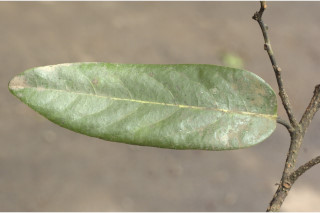
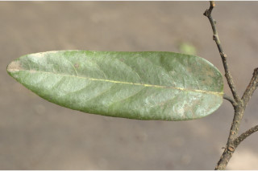
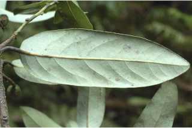
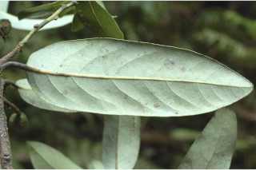
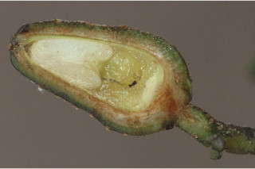
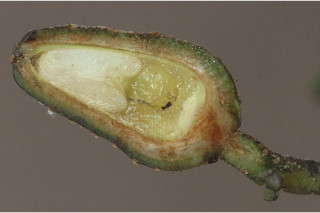

Trees up to 20 m tall.
20 ಮೀ.ವರೆವಿಗೆ ಬೆಳೆಯುವ ಮರಗಳು.
20 മീറ്റര് വരെ ഉയരമുളള മരങ്ങള്.
மரங்கள் 20 மீ. உயரம் வரை வளரக்கூடியது.
Bark brownish.
ತೊಗಟೆ ಕಂದು ಬಣ್ಣ ಹೊಂದಿರುತ್ತದೆ.
തവിട്ട് നിറത്തിലുളള പുറംതൊലി.
மரத்தின் பட்டை ப்ரவுன் நிறமானது.
Branchlets subterete, with large lenticels, glabrous.
ಕಿರುಕೊಂಬೆಗಳು ಉಪ-ದುಂಡಾಗಿದ್ದುದೊಡ್ಡ ಗಾತ್ರದ ವಾಯು ವಿನಿಮಯ ಬೆಂಡು ರಂಧ್ರ ಸಮೇತವಿದ್ದು ರೋಮರಹಿತವಾಗಿರುತ್ತವೆ.
വലിയ ശ്വസനരന്ധ്രങ്ങളുളള, അരോമിലമായ, ഏതാണ്ട് ഉരുണ്ട ഉപശാഖകള്.
சிறிய நுனிக்கிளைகள் குறுக்குவெட்டுத் தோற்றத்தில் வளையமானது, பெரிய லெண்டிசெல் கொண்டது, உரோமங்களற்றது.
Leaves simple, alternate, spiral; petiole ca. 1 cm long, planoconvex in cross section, glabrous; lamina 7.5-13 x 2.5-4 cm, elliptic-oblong to lanceolate, apex acute to obtuse, base acute to rounded, margin entire, glabrous, glaucous beneath; midrib canaliculate; secondary_nerves 6-8 pairs; tertiary_nerves broadly reticulate.
ಎಲೆಗಳು ಸರಳವಾಗಿದ್ದು ಪರ್ಯಾಯ ಹಾಗೂ ಸುತ್ತು ಜೋಡನಾ ವ್ಯವಸ್ಥೆಯಲ್ಲಿ -ರುತ್ತವೆ;ತೊಟ್ಟುಗಳು ಅಂದಾಜು 1 ಸೆಂ.ಮೀ. ಉದ್ದವಿರುತ್ತದೆ ಮತ್ತು ಅಡ್ಡ ಸೀಳಿದಾಗ ಸಪಾಟ ಪೀನಮಧ್ಯ ಆಕಾರದಲ್ಲಿರುತ್ತವೆ; ಹಾಗೂ ರೋಮರಹಿತವಾಗಿರುತ್ತವೆ; ಪತ್ರಗಳು 7.5-13 X2.5-4 ಸೆಂ.ಮೀ.ವರೆಗಿನ ಗಾತ್ರ ಹೊಂದಿದ್ದು ಅಂಡವೃತ್ತ-ಚತುರಸ್ರದಿಂದ ಭರ್ಜಿಯವರೆಗಿನ ಆಕಾರ ಹೊಂದಿದ್ದು ಚೂಪಾದ ಅಥವಾ ಚೂಪಲ್ಲದ ತುದಿ, ಚೂಪಾದುದರಿಂದ ದುಂಡಾದ ಬುಡಹೊಂದಿರುತ್ತವೆ ಮತ್ತು ರೋಮರಹಿತವಾಗಿರುತ್ತವೆ; ಪತ್ರದ ತಳಭಾಗ ಮಾಸಲು ಬೂದು ಹಸಿರು ಬಣ್ಣ ಹೊಂದಿರುತ್ತದೆ;ಮಧ್ಯ ನಾಳ ಕಾಲುವೆಗೆರೆ ಸಮೇತವಿರುತ್ತದೆ;ಎರಡನೇ ದರ್ಜೆಯ ನಾಳಗಳು 6- 8 ಜೋಡಿಗಳಿರುತ್ತವೆ; ಮೂರನೇ ದರ್ಜೆಯ ನಾಳಗಳು ವಿಶಾಲವಾದ ಜಾಲಬಂಧ ನಾಳ ವಿನ್ಯಾಸದಲ್ಲಿರುತ್ತವೆ.
ലഘുവായ ഇലകള്, ഏകാന്തര ക്രമത്തില്, സര്പ്പിളമായാണ്; ഛേദത്തില് ഒരുഭാഗം പരന്നും മറുഭാഗം ഉരുണ്ടുമിരിക്കുന്ന ഘടനയുളള, അരോമിലമായ, ഇലഞെട്ടിന് ഏതാണ്ട് 1 സെ.മീ നീളം; പത്രഫലകത്തിന് 7.5 സെ.മീ തൊട്ട് 13 സെ.മീ വരെ വീതിയും 2.5 സെ.മീ തൊട്ട് 4 സെ.മീ വരെ വീതിയും, ആകൃതി ദീര്ഘവൃത്താകാരം-ആയതാകാരം തൊട്ട് കുന്താകാരം വരെയാകാം, പത്രാഗ്രം നിശിതം തൊട്ട് ഉപകോണാകാരം വരെയാകാം, പത്രാധാരം നിശിതം തൊട്ട് വൃത്താകാരം വരെയാകാം, അരോമിലമാണ്, കീഴെ നിലരാശികലര്ന്നതാണ്; മുഖ്യസിര ചാലുളളതാണ്; 6 മുതല് 8 വരെ ജോഡി ദ്വിതീയ ഞരമ്പുകള്; വീതിയേറിയ ജാലിതമായിട്ടുളള ത്രിതീയ ഞരമ്പുകള്.
இலைகள் தனித்தவை, மாற்றுஅடுக்கமானவை, சுழல் போன்று அமைந்தவை; இலைக்காம்பு 1 செ.மீ. நீளமானது, குறுக்குவெட்டுத் தோற்றத்தில் பிளேனோகான்வக்ஸ், உரோமங்களற்றது; இலை அலகு 7.5-13 X 2.5-4 செ.மீ., நீள்வட்டம்-நீள்சதுரம் முதல் ஈட்டி வடிவானது, அலகின் நுனி கூரியது முதல் மழுங்கியவை, அலகின் தளம் கூரியது முதல் வட்டமானது, கீழ்பரப்பு உரோமங்களற்றது, அலகின் கீழ்பரப்பு மெழுகு பூசியது போன்றது அல்லது சாம்பல் கலந்த நீல நிறமானது (க்களாக்கஸ்); மையநரம்பு மேற்பரப்பில் அலகின் பரப்பைவிட பள்ளமானது; இரண்டாம் நிலை நரம்புகள் 6-8 ஜோடிகள்; மூன்றாம் நிலை நரம்புகள் அகன்ற வலைப்பின்னல் போன்றது.
Flowers in axillary or terminal panicle, pubescent.
ಹೂಗಳು ಅಕ್ಷಾಕಂಕುಳಿನಲ್ಲಿನ ಅಥವಾ ತುದಿಯಲ್ಲಿನ ಮೃದು ತುಪ್ಪಳವುಳ್ಳ ಪುನರಾವೃತ್ತಿಯಾಗಿ ಕವಲೊಡೆಯುವ ಪುಷ್ಪಮಂಜರಿಯಲ್ಲಿರುತ್ತವೆ.
പൂക്കള്, നനുത്ത രോമിലമായ കക്ഷീയമോ ഉച്ഛസ്ഥമോ ആയ പാനിക്കിളിലുണ്ടാകുന്നു.
மலர்கள் இலைக்கோணங்களில் அல்லது தண்டின் நுனியில் காணப்படும் பேனிக்கிள், உரோமங்களுடையது.
Drupaceous, ovoid, lenticellate, apparently ribbed when dry, 1.5 cm across; seed 1.
ಡ್ರೂಪ್ಗಳು 1.5 ಸೆಂ.ಮೀ. ಅಡ್ಡಗಳತೆ ಹೊಂದಿದ್ದು ಅಂಡಾಕಾರದಲ್ಲಿರುತ್ತವೆ ಮತ್ತು ವಾಯು ವಿನಿಮಯ ಬೆಂಡು ರಂಧ್ರ ಸಮೇತವಿದ್ದು ಒಣಗಿದಾಗ ಸ್ಪಷ್ಟವಾಗಿ ಕಾಣುವ ಉಬ್ಬು ತಗ್ಗುಳ್ಳ ಗೆರೆಗಳನ್ನು ಹೊಂದಿರುತ್ತವೆ ಮತ್ತು ಒಂದು ಬೀಜವನ್ನು ಒಳಗೊಂಡಿರುತ್ತವೆ.
ഒറ്റവിത്തുളള കായ, ശ്വസനരന്ധ്രങ്ങളുളള ഉണങ്ങുമ്പോള് വ്യക്തമായ വരമ്പുകളുളള 1.5 സെ.മീ കുറുകേയുളള അണ്ഡാകാര ഡ്രൂപ്പ് ആണ്.
உள்ளோட்டுத்தசைகனி (ட்ரூப்) போன்றது, முட்டை வடிவானது, லெண்டிசெல் உடையது, உலரும் போது வரித்தழும்புகளுடையது, 1.5 செ.மீ. குறுக்களவுடையது; விதை ஒன்றுடையது.


 

 



 
